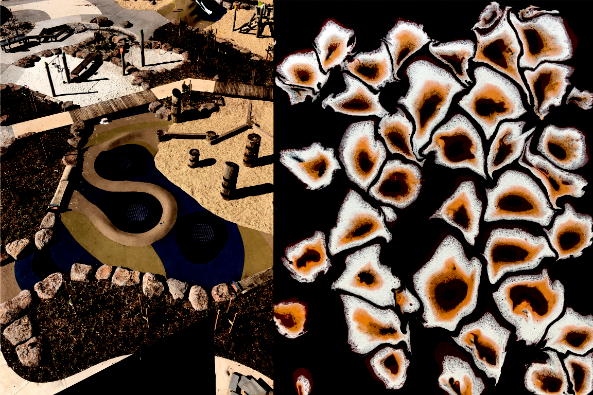

Intro
I like it when a place has been designed from one perspective but creates a tension when it is viewed from other angles. As well as a tension between the way it looks to some and the way it looks to me. Trouble is, the kinds of places I find most appealing result in crowds of people that shadow the shapes.
What do I want to say with my art?
Celebrate the human creation, the marks people make on the world. Treasure the local, the small-scale, the eccentric, the ordinary: whatever is made out of shapes. Respect what people have built for themselves. Find the beauty in distortion and clutter.”
Work

I have reverted to painting irregular shapes, one containing the other. A pinkish circular toned surface is framed by a black ring. Slightly off-center, the pinkish surface creates the illusion of a blob superimposed on another one.
Merging the aesthetics of landscape, landscape design with his spatial obsession develops into something more creative.
Alas, the call of "Spatialism" was too strong to deter me from Dadaistic doodling. Texture rises as it does in the landscape to make up this "Spatial Concept".
If I tire of this primitive doodling, I return to shaping the garden, my first calling.
About

Julian Gregg designs ecological scapes. His aerial designs translate loosely onto canvas. This study demonstrates the link.
Contact